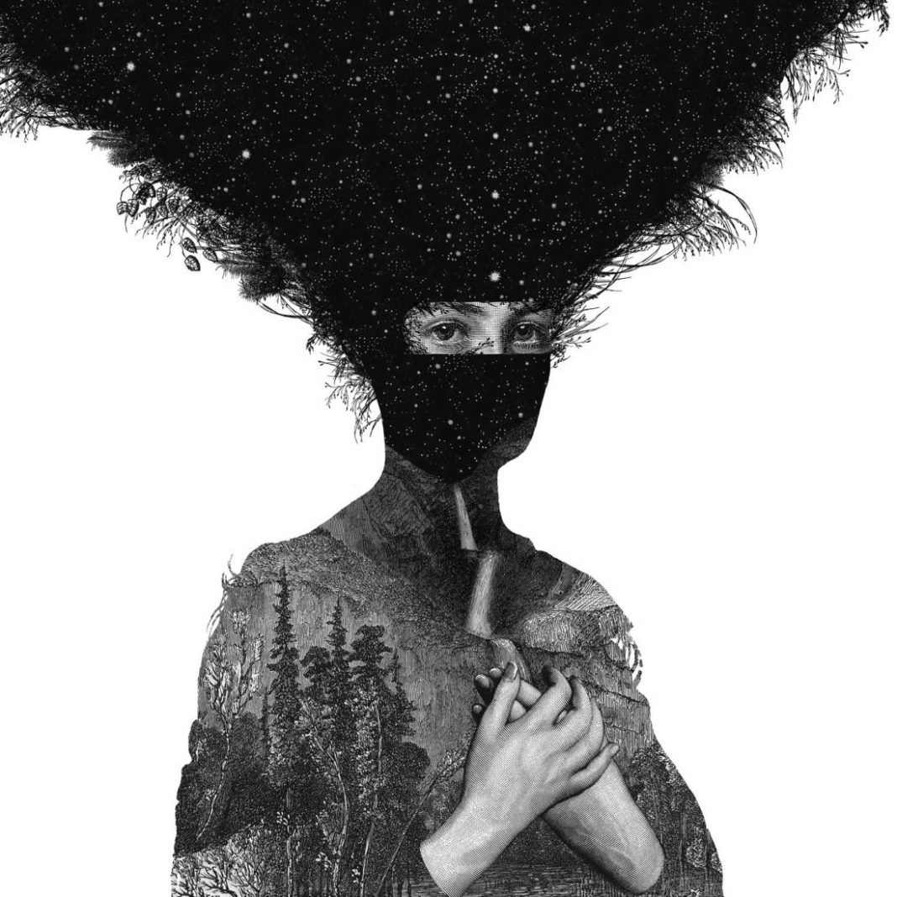

Royal Blood
Mike Kerr, Ben Thatcher
Royal Blood es un dúo británico de rock formado en Brighton en el 2011. El sonido de la banda se centra especialmente en una mezcla de Garage Rock y Blues Rock, y su principal caracterización es su puesta en primer plano de un bajo y la no inclusión de guitarras.
El sonido característico de Royal Blood está influenciado por bandas como Muse, Queens of the Stone Age, Foo Fighters, Led Zeppelin o The Dead Weather. Los riffs son ejecutados por Mike Kerr en un bajo, el cual tiene un sonido que consta en sonidos de guitarra y bajo concentrados en un solo instrumento.
Learn More →